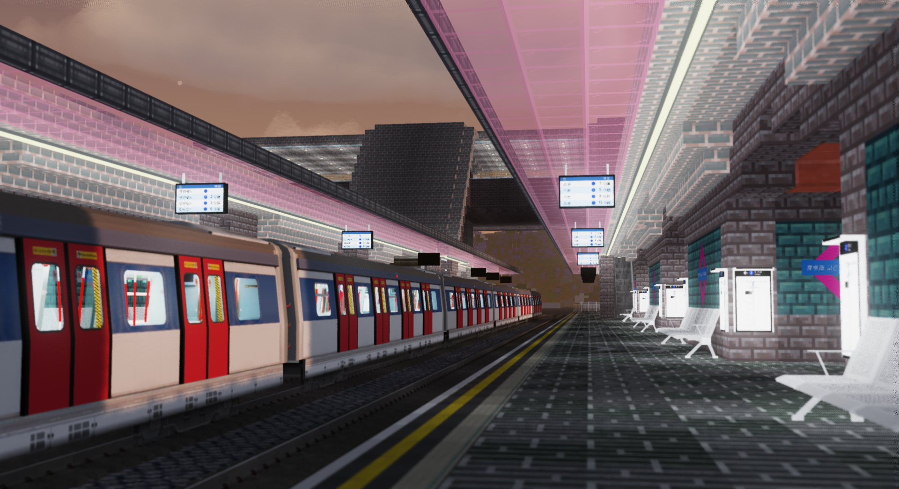
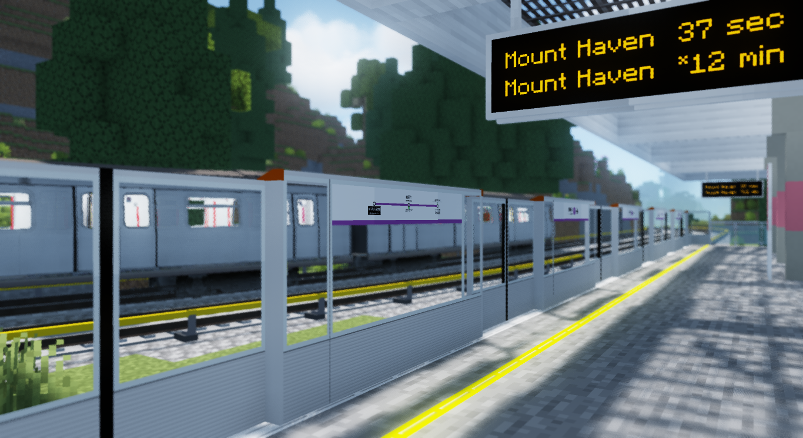
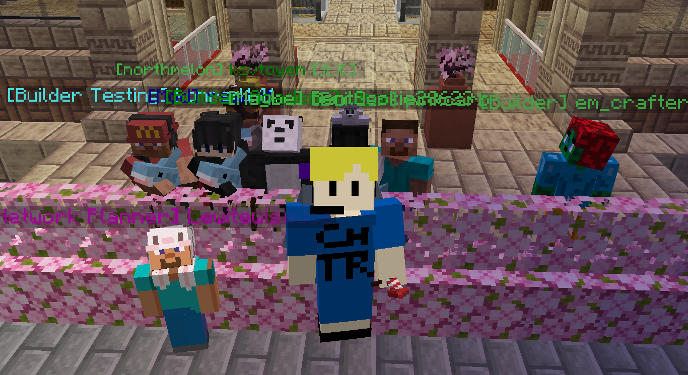
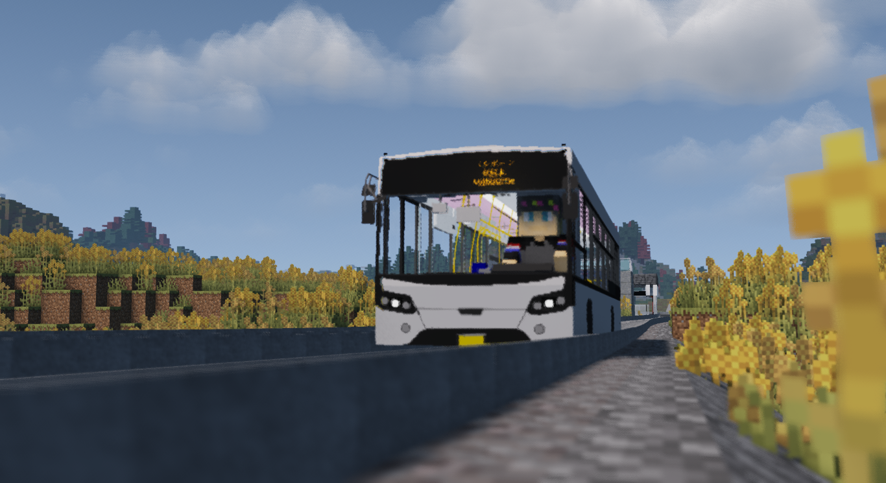

Your journey begins here

Introduction
Hi, welcome to NovaMTR! We're a small little server based on the Minecraft Transit Railway mod! Here you can meet new people and freely express yourselves, and have fun playing on the server! (Probably)

Our network
Starting since July of 2025, we've been rapidly expanding since! The amount of railways and transports in our MTR server is big enough to serve the best cities in the world, and in some cases bigger than other MTR servers!

Our community
Our LGBTQ+ friendly community allows people all across the globe to talk to each other safely! Here you can have discussions in forums, showcase your Minecraft builds and many more!

Becoming a builder
We'd be glad for you to become part of our buider team! You can apply for a builder application, and if we approve it, showcase your skills in a build test, taken place within our Minecraf server!
Our dynamic square map
Our dynamic square map allows you to view the whole NMTR world, including markers where stations are! This could be very helpful for planning where to build your next transport line.
Our dynamic system map
Our dynamic system map allows you to view the whole NMTR network in full, while keeping the interface clean and readable!
Our YouTube channel
In case you don't know, we have a YouTube channel! Here we post timelapses, cab rides and many more.